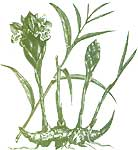
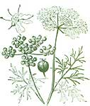

Green Pharmacy For Indigestion
Natural remedies, alternative medicine, for indigestion, including chamomile, peppermint, ginger, angelic, marjoram, coriander, papaya, pineapple, red pepper.
By James A. Duke
October/November 2002
by James A. Duke
Many years ago, my family and I spent a good deal of time in Panama. The late, great anthropologist Reina Torres de Araus invited our family out to her Los Cumbres residence for wonderful meals. After dinner she never served coffee, just chamomile tea. Back then I didn't appreciate how much sense it made to end an evening meal with this wonderful beverage. Now I know better.
Chamomile is what herbalists call a carminative, that is, a stomach soother, and it's especially good for indigestion. It's also a sedative. Many people drink chamomile tea before bed time to help them sleep.
GREEN PHARMACY FOR INDIGESTION
Hundreds of herbs can help soothe a troubled tummy. Here are several I recommend.
Chamomile (Matricaria recutita). Commission E, the German group of scientists that makes recommendations on herbal safety and effectiveness, considers chamomile effective for relieving many gastrointestinal complaints, including indigestion. Dr. Andrew Weil, author of Natural Health, Natural Medicine, says the best home remedies for an upset stomach are chamomile and peppermint tea. I prefer peppermint, but both are effective and easy to grow in your garden.
Peppermint (Mentha piperita). Most herbalists, myself included, have a special regard for peppermints ability to relieve indigestion. I've needed peppermint more often since 1990, when the U.S. Food and Drug Administration gave me a bad case of indigestion by ruling that peppermint is ineffective for stomach distress. This does not mean peppermint is useless: It means the FDA's evaluation was.
Commission E endorses peppermint tea for treating indigestion. Given a choice between an FDA pronouncement and a Commission E endorsement, I'd go for the German decision. Those folks did some research and seem to know what they're talking about.
Peppermint tea works well, but being a native son of Alabama, I'm also partial to mint juleps (bourbon, spring water, sugar and mint), which, it turns out, work even better. Varro Tyler, dean and professor emeritus of pharmacognosy (natural product pharmacy) at Purdue University, notes that most of the carminative oils in peppermint and other mints are relatively insoluble in water. As a result, mint tea doesn't contain much of the plant's stomach-soothing constituents. It does contain enough to make it effective, but a peppermint tincture, which is made with alcohol, contains more. So if you don't want to drink a julep, you can use a tincture instead. Angelic (Angelica archangelica). Angelica root is good for treating indigestion, mild stomach cramps and lack of appetite, according to Commission E. The suggested daily dose is a tea made with 2 to 3 teaspoons of dried herb per cup of boiling water, or up to 1 teaspoon of tincture.
Ginger (Zingiber officinale). Ginger's benefits for motion sickness and nausea have been amply proven, so it should come as no surprise that Commission E approves taking 2 grams (about 1 teaspoon) of ginger in tea for indigestion. Ginger contains certain chemicals that not only soothe the gut but also aid digestion by increasing the wavelike muscle contractions (peristalsis) that move food through the intestine. As noted in my new medicinal spice book, ginger, cinnamon, hot pepper and turmeric are just a few of the spices that can settle a distressed stomach.
Marjoram (Origanum onites). The British munch on marjoram sandwiches to treat indigestion and use diluted marjoram tea to relieve colic in infants. Marjoram is an aromatic mint, so it has digestion-soothing benefits that are similar to peppermint's.
Coriander (Coriandrum sativum). No wonder coriander helps soothe indigestion: Its essential oils are carminative, antiseptic, bactericidal, fungicidal and a muscle relaxant. Traditional herbalists valued coriander, especially to counteract the stomach-upsetting properties of laxative herbs such as buckthorn, cascara, rhubarb and senna. In the Amazon, wild coriander (Eryngium foetidum), with nearly the same chemistry, is added to their daily bean ration, perhaps to alleviate the flatulence the beans could generate.
Papaya (Carica papaya) and pineapple (Ananas comosus). Both of these fruits contain enzymes that break down protein, called proteolytics. Naturopaths and people who advocate juicing liar health maintain that papaya and pineapple juice are good for relieving indigestion. If they're right, you should also get benefits from eating other fruits that contain proteolytic enzymes, such as kiwifruit or some figs, after meals. If I had chronic indigestion, I might have these fruits for dessert more often.
Red pepper (Capsicum, various species). Americans often believe that hot spices upset the stomach. But much of the rest of the world knows better-that hot spices like red pepper help soothe it. Red pepper also stimulates digestion.
Assorted carminative herbs. Carminative medicine prevents the formation of gas in the alimentary tract or eases its passing. If anything, there are too many herbal ca carminatives. In my database, I have more than 500 carminative entries, including all of the plants already- mentioned. Most are supported by at least some research. Also included are agrimony, allspice, apples, hasil, bay, bee balm, buckwheat, burdock, caraway, cardamom, catnip, celery, chervil, chives, cloves, cumin, dill, fennel, garlic, horehound, hyssop, lemon balm (also known as melissa). lemon-grass, lovage, nutmeg, onions, oregano, parsley, parsnips, rosemary, sage, savory, tarragon, thyme, turmeric, vanilla and yarrow. Feel free to try any of these herbs to relieve indigestion.
Assorted essential oils. Aromatherapists often recommend a few whiffs of a number of different carminative oils to settle a troubled tummy, including aniseed, basil, bergamot, chamomile, cinnamon, clove, coriander, fennel, garlic, ginger, hyssop, juniper, lavender, lemon, lemongrass, onion, peppermint, rosemary, sage, savory, tarragon and thyme. Do not ingest these oils pure, as the undiluted Oil can he fatal even in small doses. They are only meant to be used externally or drastically diluted.
One of the world's leading authorities on herbal healing, James A. Duke is author of The Green Pharmacy (see MOTHER's Bookshelf, Page 103), as well as the Handbook of Medicinal Spices (available through CRC Press). Active in rain forest preservation, he leads ecotours in the Amazon. Contact him at jimduke@comcast.net
|
 A teaspoon of ginger is good medicine to calm a stomach that doth protest too much. |
 Coriander can be cooked with beans to reduce the flatulence factor. |
 Aromatherapists recommend inhaling various essential oils for upset stomachs. |